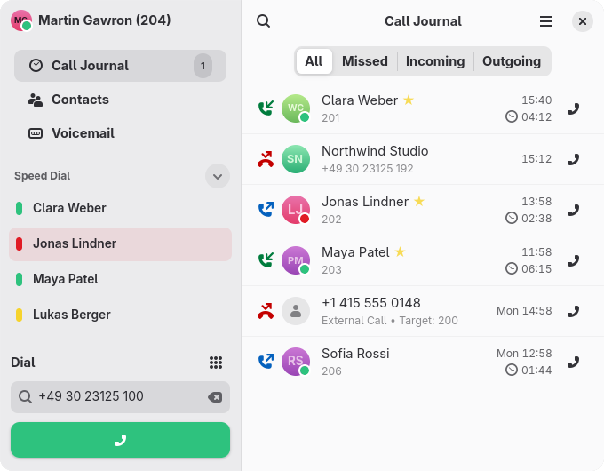

Native GNOME Experience
Adaptive layout with call journal, searchable contacts, voicemail overview, speed dial, and automatic light & dark styling.
A modern, native SIP and PBX softphone for GNOME - clean, fast, and built for the Linux desktop.

Adaptive layout with call journal, searchable contacts, voicemail overview, speed dial, and automatic light & dark styling.
Manage two simultaneous phone lines with hold, instant swap, attended merge, or drag-and-drop transfer directly onto a colleague.
Built-in calling, audio, keypad tones, and instant messaging written in Rust - no Wine, no browser wrappers, and no proprietary plugins.
Credentials stay safely in your GNOME Keyring, with optional read-only GNOME Contacts sync, background mode, and Flatpak sandboxing.
Connect directly to FRITZ!Box, Sipgate, or any standard SIP account with custom port and realm support.
Full Swyx support with live colleague status, speed dials, group call pickup, voicemail notifications, profile avatars, and instant messages.
Direct calling, call hold, blind & attended transfer, and keypad tone navigation for self-hosted phone systems.
git clone https://github.com/megawron/deskphone.git
cd deskphone
cargo build --release --bin deskphone
A GNOME Meson build (meson.build) and Flatpak manifest
(com.martingawron.Deskphone.json) are included in the repository.
Report bugs or contribute translations on
GitHub Issues.